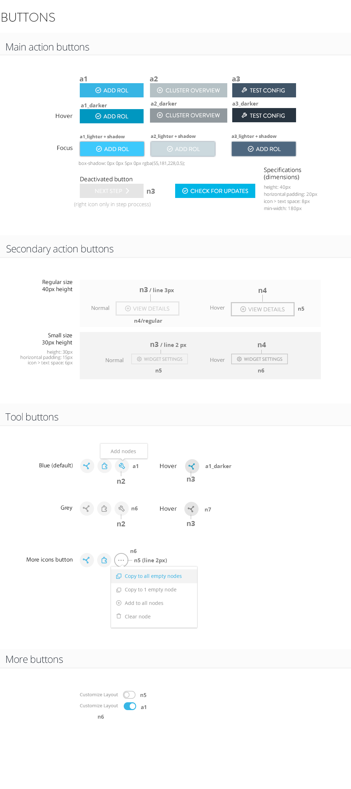

1 Colors
To do
1.1 Backgrounds
Here we will talk about the meaning of the colors used, how to use them and so on.

b1: #222b37 (Top area)
b2: #1a212b (Header area)
b3: #eff2f3 (Submenu area)
b4: #fff (Main content area)
b3_dark: #e1e4e5
(Submenu area with -5 luminosity value)
(Submenu area with -5 luminosity value)
1.2 Accent
The main accent color is c1: #37b5e4, the stratio logo color. Accent colors should be used sparingly, mainly for buttons, links and elements of the header, menus and footer.
a1_light: #3dc9fc
a2_light: #ccd9de
a3_light: #4f6880
a1: #37b5e4
a2: #b5c1c5
a3: #405467
a1_dark: #2d96bd
a2_dark: #919b9e
a3_dark: #283440
1.3 Neutral
This color palette provides a neutral backdrop. These colors are used largely for text and content blocks. When alternating between tones, be sure to use enough contrast between adjacent colors.
n0: #fff
n1: #fbfbfb
n2: #f3f3f3
n3: #e4e4e4
n4: #cbcbcb
n5: #b5b5b5
n6: #99999
n7: #777777
n8: #555555
n9: #242424
n10: #000000
1.4 Status
s1_light: #9ab084
s2_light: #ffa033
s3_light: #e36459
s1: #88b060
s2: #ff8900
s3: #e23b2b
s1_dark: #759653
s2_dark: #e57a00
s3_dark: #c93426
1.5 Tertiary
To do
t1: #d7c200
t2: #00d9df
t3: #a7eb1e
1.6 Color examples
